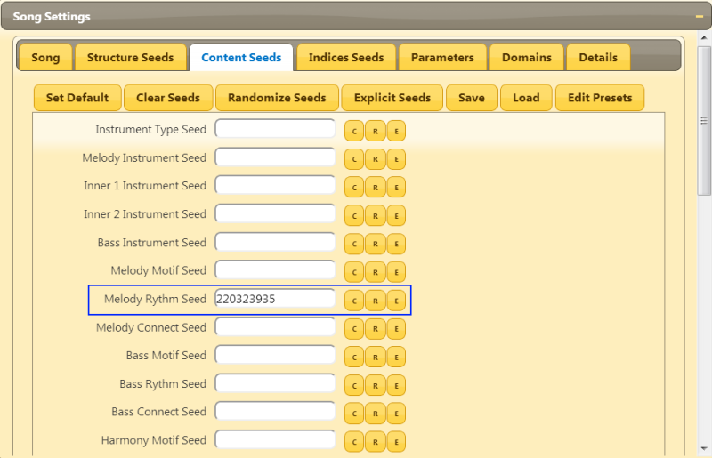
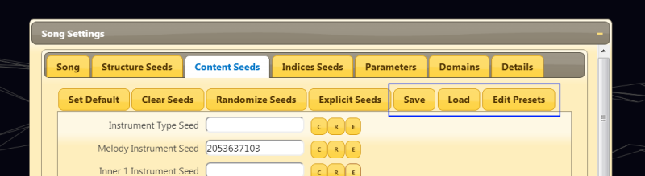
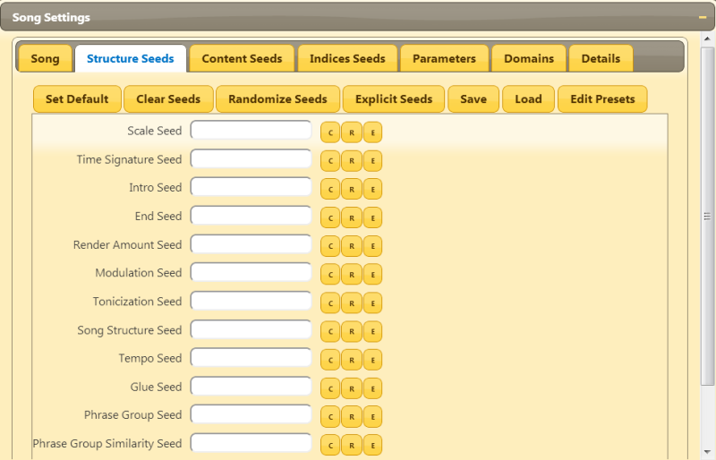

Sub Seeds Tutorial
Welcome to the second tutorial about Abundant Music!
If you have read the first tutorial, you know about that you can generate complete songs by just changing the main seed in the "Song Settings" window.
When you set a main seed, a lot of other seeds get set as well. For example, the rythm of the harmony is controlled by one such sub-seed.
So, if you find something in your song that you dislike, you can take a look in the "Structure Seeds" and "Content Seeds" tabs and enter a seed for the things you don't like.
Changing Melody Rythm
Now, let's play with some sub-seeds.
First, enter a new, cool seed (or a random one) into the "Song" tab in the "Song Settings" window. Then listen to the song, especially the melody, by exporting it to your favourite format.
Now, let's pretend that you don't like the rythm of the melody. You want to change it! To do this really quickly, find the "Melody Rythm Seed" in the "Content Seeds" tab and enter something. This new seed will override the default one and will modify the rythm.
Export the song again and listen to the melody now! Is it better now? If not, change the seed again!
If you want to see the actual or explicit seed that is generated by the main seed, press the small "E" button. You can also press the "Explicit Seeds" button to show all explicit seeds in that tab.
More Sub-Seeds
There are several sub-seeds that determine the final melody that you can experiment with.
- Melody Instrument Seed: Partly determines the set of melody instruments. Note that the instrument choice also depends on other factors which we are going to examine in later tutorials.
- Melody Motif Seed: Determines the offsets of the voice line embellishment. For example, a motif could go up a scale note and then down two steps. Many combinations are possible and that seed is the input to the random process that generates such patterns.
- Melody Connect Seed: Determines where and how the motif should connect to the next voice line element.
- Melody Distribution Seed: This seed determines how the different motifs are distributed in phrases.
- Melody Harmony Punctation Seed: The melody instrument is sometimes used to fill out the other harmony notes. This seed determines how this is done.
- Melody Shape Seed: This seed modifies the voice line that the motifs follow. There are more settings in the "Domain" tab that also contribute to the final voice line.
There are a lot of more seed that are connected to other voice lines and percussion. The bass and melody have very similar seeds. The inner voice lines 1 and 2 works a little different and will be more depending on the actual instrument choice. Therefore they have fewer seeds at the moment, but this will probably change.
Using Presets
Suppose that you find a very nice set of seeds for your melody, bass etc. and want to use these for another song as well. You can then use the preset functionality which you can use with the "Save", "Load" and "Edit Presets" button.
You can try this by saving your current seeds from your experiments and then create a completely new song and reuse some or all of those seeds. This might be useful if you want to create several songs that are connected with each other in many different ways, not just motifs, rythms and harmony.
Structure Sub-Seeds
There is another tab named "Structure Seeds" where you can change the fundamental way the song is structured.
If you have a particluar scale type, structure or phrase group you want to add, it is better to explore the "Details" tab instead. This tab will be discussed more in later tutorials.
Indices Sub-Seeds
In the tab "Indices Seeds", there is another bunch of seeds. These seeds are a bit more tricky to understand since they are dealing with how the phrases are constructed by using indices to reference motifs, motif distributions and so on. This is very important for creating connections between song parts but I don't recommend changing anything (it will not do any harm though :) ) unless you want to copy the seeds to another song that should use the same. Do this by making some or all seeds explicit and save as a preset.
More interesting uses of these seeds might pop up in the future though :)